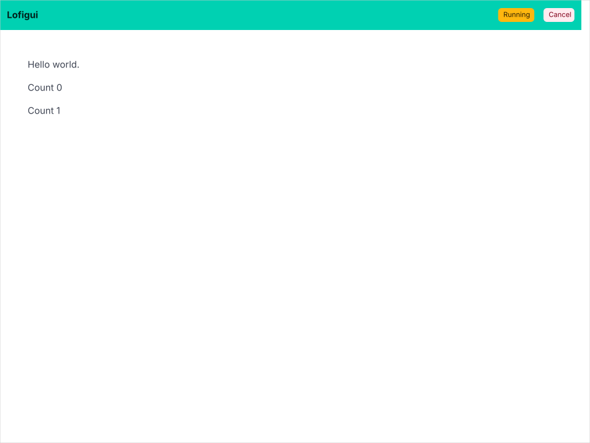

01 — Hello World
If you can write a Go program that prints to stdout, you can write a lofigui app. The model function below is ordinary Go code — Print(), a loop, a sleep. The only difference is the output goes to a web page instead of a terminal. No WebSocket, no JavaScript — just the browser's built-in refresh mechanism doing the work.


The model — your application logic
A lofigui app has two parts: a model that does the work and a server that wires it to the web. This is the model:
// Model function - this is your application logic.
// Just like a terminal program: print output and sleep between steps.
func model(app *lofigui.App) {
lofigui.Print("Hello world.")
for i := 0; i < 5; i++ {
app.Sleep(1 * time.Second)
lofigui.Printf("Count %d", i)
}
lofigui.Markdown("<a href='/'>Restart</a>")
lofigui.Print("Done.")
app.EndAction()
}fmt.Println() — each call adds a line of output. The difference: instead of writing to the terminal, it appends HTML to a buffer that the browser displays.
Handle calls StartAction() before launching the model goroutine, which enables auto-refresh polling. The model calls EndAction() when it's done — the browser stops refreshing and the output stays put.
The server — wiring it up
Three lines: create an app, register the model, start the server.
func main() {
app := lofigui.NewApp()
http.HandleFunc("/", app.Handle(model))
log.Fatal(lofigui.ListenAndServe(":1340", nil))
}EndAction(), polling stops.
NewApp() provides a built-in template (Bulma-styled), 1-second refresh, and a /favicon.ico handler. Later examples show how to override each of these with custom controllers, templates, and separate start/display endpoints.
The full source is split across two files: main.go (the server) and model.go (the application logic). The model is in its own file so it can be shared with the WASM build — if you don't need a WASM version, a single main.go is all you need.
How it works
The browser hits /, the server starts the model and returns a page with a Refresh header. The browser reloads every second, showing new output as the model prints. When the model returns, polling stops and the server exits cleanly.
See technical details for a full sequence diagram and internals.
WASM: running in the browser
The live demo runs the same model() function compiled to WebAssembly — entirely in your browser, no server required. Because the model lives in its own file (model.go), both the server and WASM builds share it unchanged.
A separate main_wasm.go file (build-tagged js && wasm) replaces the server with a single call:
//go:build js && wasm
package main
import "codeberg.org/hum3/lofigui"
func main() { lofigui.RunWASM(model) }goStart(), goRender(), and goIsRunning() — then calls wasmReady() and blocks. A small JavaScript timer calls goRender() every 500ms to update the page. For apps that need custom JS exports (extra buttons, multiple render functions), write the wiring by hand instead — see examples 07–12.
GOOS=js GOARCH=wasm go build -o main.wasm . produces the binary. Go provides wasm_exec.js as a loader. The Taskfile.yml docs:build-wasm task automates this for all examples.